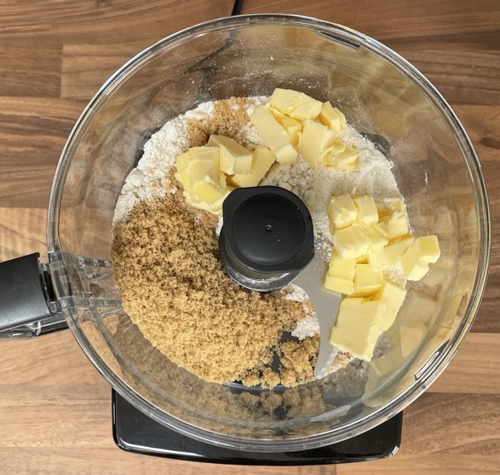
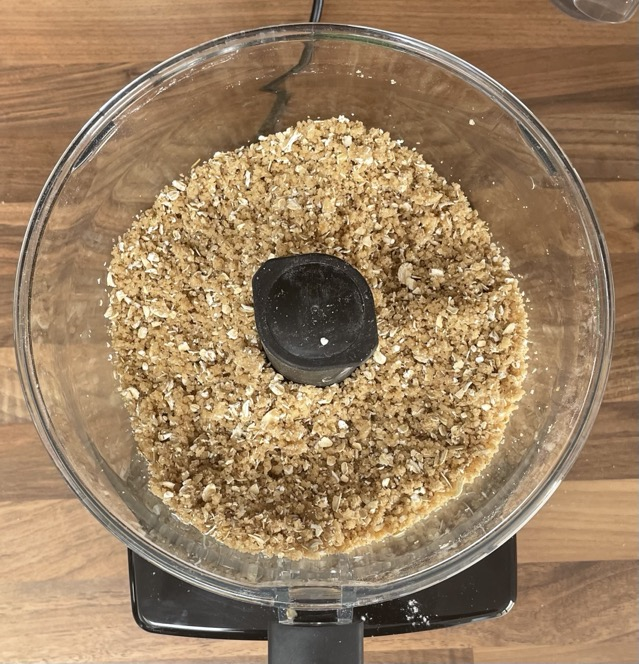

Crumble topping
- Blitz with blades till almost dough forming
- plain flour
- light muscavado/brown sugar
- unsalted butter chilled & cubed
- Mix in
- oats
- spice (optional)
Spices
- ginger 1 tsp too much for 10 portions, try ½-¾ tsp
- cinnamon try 1 tsp for 10 portions
Amounts
- Ratios (10 portions = 380g)
- 140g plain flour
- 90g unsalted butter cubed
- 90g light brown sugar
- 60g oats
- Ratios (4 portions = 150g)
- 55g plain flour
- 35g unsalted butter cubed
- 35g light brown sugar
- 25g oats
- Ratios (1 portion = 38g)
- 14g plain flour
- 9g unsalted butter cubed
- 9g light brown sugar
- 6g oats
Pics

